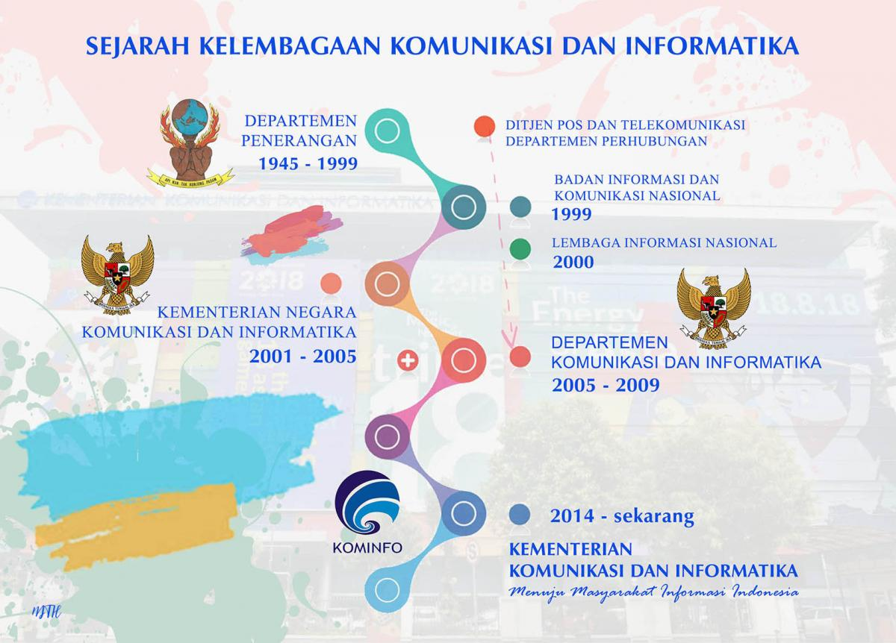

Sejarah
Sesuai Undang-Undang Nomor 39 Tahun 2008 tentang Kementerian Negara, Kementerian Kominfo merupakan perangkat Pemerintah Republik Indonesia ini membidangi urusan yang ruang lingkupnya disebutkan dalam Undang-Undang Dasar Negara Republik Indonesia Tahun 1945, yaitu informasi dan komunikasi.
Bermula dari Deppen
Kementerian Komunikasi dan Informatika, sebelumnya bernama "Departemen Penerangan" (1945-1999), "Kementerian Negara Komunikasi dan Informasi" (2001-2005), dan Departemen Komunikasi dan Informatika (Depkominfo) (2005-2009).
Mulai tahun 1966, salah satu tugas pokok organisasi penerangan adalah mengarahkan pendapat umum agar terbentuk dukungan, kontrol dan pratisipasi sosial yang positif terhadap pelaksanaan kebijaksanaan pemerintah, selain untuk penerangan ke dalam dan luar negeri. Pada masa itu pengorganisasian ke dalam dilakukan agar Departemen Penerangan berfungsi menjadi Juru Bicara Pemerintah. Tanggal 15 September 1967 wewenang penerangan luar negeri (Penlugri) yang sejak 1959 dipegang Departemen Luar Negeri RI dialihkan kembali pengelolaannya kepada Departemen Penerangan.
Tahun 1971, untuk meningkatkan efisiensi dan efektivitas sarana media massa, dikembangkan sistem komunikasi terintegrasi melalui koordinasi, integrasi dan sinergi antarunsur-unsur penerangan pemerintah. Dibentuklah lembaga antara lain Badan Koordinasi Kehumasan Pemerintah (BAKOHUMAS) dan Badan Koordinasi Penerangan (BAKOPEN).
Masa Reformasi
Pada awal masa reformasi, tugas dan fungsi Departemen Penerangan tidak banyak berubah. Kelembagaan penerangan dipertahankan mulai dari tingkat pusat sampai provinsi dengan nama kantor wilayah departemen penerangan dan biro humas provinsi. Pasca pemberlakuan Undang-undang Nomor 22 Tahun 1999 tentang Pemerintahan Daerah, terjadi reposisi terhadap perangkat daerah sesuai kepentingan daerah. Kantor penerangan di bawah koordinasi pemerintah provinsi, kabupaten dan kota.
Sejak tahun 2005, terjadi perubahan dari Kementerian Negara Komunikasi dan Informasi menjadi Departemen Komunikasi dan Informatika. Sesuai dengan Peraturan Presiden Nomor 9 Tahun 2005, dilakukan integrasi Kementerian Negara Komunikasi dan Informasi; Lembaga Informasi Nasional, dan Direktorat Jenderal Pos dan Telekomunikasi.
Akhir tahun 2010 lalu, lembaga Kementerian Komunikasi dan Informatika menyempurnakan penataan organisasi. Paradigma baru kebijakan komunikasi menempatkan informasi sebagai bagian kebutuhan keseharian masyarakat. Fungsi informasi dikembangkan pada nilai tambah ekonomi, bukan sekadar 'penerangan', namun lebih dukungan komunikasi strategis untuk membangun integrasi nasional dengan baik.
Transformasi Digital
Dinamika teknologi informasi dan perkembangan ekonomi digital membuat Kementerian Komunikasi dan Informatika fokus untuk melakukan percepatan pemerataan infrastruktur digital berupa akses telekomunikasi dan jaringan internet. Selain terjadi perubahan nomenklatur, pada akhir tahun 2006, Kementerian Kominfo menerapkan pola pengelolaan keuangan badan layanan umum berdasarkan Keputusan Menteri Keuangan Nomor: 1006/KMK.05/2006 tentang Penetapan Balai Telekomunikasi dan Informatika Perdesaan (BTIP).
Seiring dengan pesatnya perkembangan di bidang Teknologi Informasi dan Komunikasi (TIK) dan tuntutan akan ketersediaan layanan TIK di seluruh lapisan masyarakat, maka BTIP bertransformasi menjadi Balai Penyedia dan Pengelola Pembiayaan Telekomunikasi dan Informatika (BP3TI) pada tanggal 19 November 2010. Sejak Agustus 2017, Menteri Komunikasi dan Informatika mencanangkan nama baru bagi BP3TI menjadi BAKTI. Lembaga itu mempunyai tugas melaksanakan pengelolaan pembiayaan Kewajiban Pelayanan Universal dan penyediaan infrastruktur dan layanan telekomunikasi dan informatika.